Introduction
What is a Five Year Mission?
A Five Year Mission is a Solo Campaign where you play as one captain over the course of five to ten games, gaining boosts as you go along. You select your overarching difficulty at the start of the Campaign, and then you can play with either the basic or advanced side your captain board. Depending on your campaign mode, you'll use the designated Bot Stardate cards based on the level Bot you're facing (generally increasing in difficulty as you win). You can end a Five Year Mission after your fifth win or tenth play, whichever comes first. And you can never face an opponent captain that you've already beaten.
Difficulty Levels
I've included the chart from the rulebook on the level of difficulty of the bot depending on what difficulty you've set the campaign at and how many wins you have. I don't have a ton of commentary here, except to say that this is a great way to practice playing more difficult Bots if you're wanting to gradually work up to beating Admiral level Bots with some assistance from the campaign boosts.
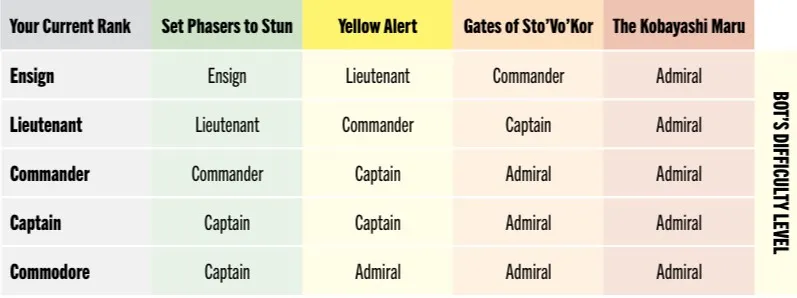
↑ back to topUpgrades and Reinforcement Deck
When playing a Five Year Mission, you'll earn upgrades after each game, win or lose. Those options will always include an option to take a card from the market that you obtained during the just-finished game and add it to your Reinforcement Pile, a new mechanism for the Five Year Mission Campaign. The second option will be some kind of ongoing benefit that will apply the rest of the campaign. If you choose to add a card to your Reinforcement pile, it is removed from the market and placed in a new Reinforcement pile at the beginning of each subsequent game of the campaign. Once you have a Reinforcement pile, you will add the Solo Campaign Only card "Reinforce" to your available cards. Reinforce has two Free Play actions. The first allows you to Take a card from your Reinforcement pile. Since it's a pile, you can leave it face-up and choose any card you want (if you have multiple) from the Reinforcement pile. The second Reinforce action allows you to draw a card and Log Reinforce if your Reinforcement pile is empty. You can also log Reinforce in other ways as it is a Directive, but if you have cards remaining in your Reinforcement pile at the end of the game, you will not score them.
General Five Year Mission Strategy
There's not a ton different from a Five Year Mission than the standard game. You do get to choose which captain to face off against, and you can thus face more difficult Bot captains first at lower difficulty levels, or wait to face them when you've gained enough upgrades to take them on. There's also the strategy of making sure you get cards you want to reinforce, even if you don't necessarily need them immediately. You may have no chance of using Forced Singularity effectively in this game, but maybe the captain you're up against will let you Reinforce it, and you can use it the rest of the campaign. Another note is that using Reinforce lets you Take a card directly to your hand, so knowing that can really help boost your options mid-Action phase. Since a big part of the strategy here is which captain to face at which point, here's a breakdown of each captain's post-game rewards and my advice on when to take them on.
Captain Upgrades
Picard
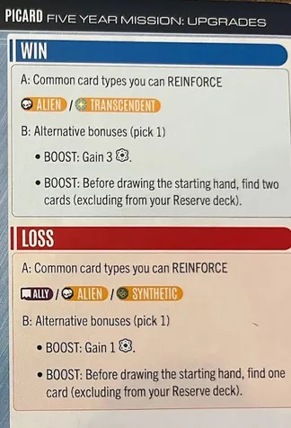
Win or lose, facing Picard will let you Reinforce an Alien-trait card. If you've been having trouble with Reinforcing the right cards, it wouldn't hurt to focus there so it doesn't matter if you win or lose. Since four Ally cards have the Alien trait (Bynars, Edosians, Suliban, and Tholians) in addition to Horta (Cargo) and Voth Research Vessel (Ship), this is probably your best bet against Picard. Transcendent only applies to the Organians Ally, so there's some limits there. His alternative bonuses for a loss are one Research or Finding a card from your available/discarded cards before drawing your deck. For a win, it's 3 Research and finding two cards. These ones are interesting, because getting a boost on a Specialty track can help with early access and goal completion. But getting to find cards beats hoping for the random draw on the first turn, and can lead to ideal starting turns (you still only get a five card starting hand). It's a tough choice, especially if you're considering reinforcing a card instead.
↑ back to topShran
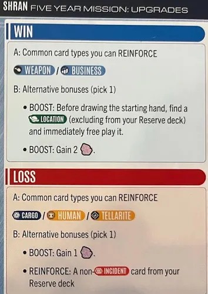
A win against Shran can allow you a Reinforce of a Weapon or Business trait. For now, that's Tevrin Krit, Holosuite, Pakled Freighter, or Karemma for Business, and Lirpa, Mek'leth, Phasers, Disruptor Pistols, or Holographic Drone Ship for Weapons. I think that's a good amount of flexibility to get something defensive or offensive against the Bot, and I love finding a reason to remove Bot away teams in exchange for Glory. On a loss, you can reinforce Cargo, Human, or Tellaraite, which is fairly broad as well. His loss bonuses are a single extra Dilithium or Reinforcing a non-Incident card from your Reserve deck. His win bonuses are two Dilithium or Finding and free playing a location from your non-Reserve cards before drawing your starting deck. This is only going to be useful for Picard and Koloth. For everyone else in the core box, you're sacrificing a free play action since you have no hand drawn. And Burnham has no starting locations. But if you can pull this off (or if future captains can) this is quite the starting benefit.
↑ back to topKoloth
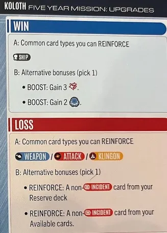
Koloth is pretty straightforward. If you lose to him, you can Reinforce a Weapon, Attack, or Klingon card. This is a great way to have access to a Klingon if you're Sela or Picard, so their missions will be easier. On a win, he lets you reinforce a Ship, which shouldn't be hard to accomplish. In what game do you get zero extra ships? (Okay, it can happen but it's pretty rare.) His alternative win boosts are similarly straightforward, gaining you two Glory or three Military. There's been some clarification on the discord and FAQ, and any benefits gained are gained in the same matter as a "free play" operation on a card, so that Glory is going to come from the Stardate Card. That's a two-point boost, but is that worth shortening the game? I'll leave that for you to strategize based on your individual captain. His alternative loss boosts allow you to Reinforce a non-Incident card from your Reserve deck or Available cards. This is fantastic as it will reduce your deck size or the number of times you have to cycle through your deck before you get to your Developments. I find that remarkable and a no-brainer, as compared to reinforcing most market cards.
↑ back to topSisko
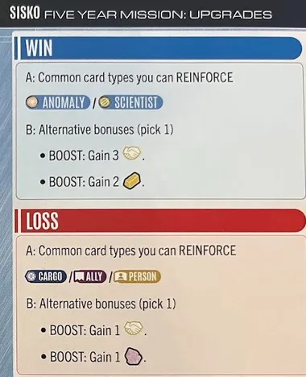
Sisko is pretty general in what you can reinforce. On a win you can reinforce any Anomaly or Scientist card you've nabbed, which has some great options (Forced Singularity, Unstable Wormhole, Voth Research Vessel, and D'kyr Cruiser, for example). On a loss, you have a ton of market flexibility, and can reinforce anything but Ships. His alternative boosts are also straightforward, with the choice of Influence (win three / loss one) or resources (win two Latinum / loss one Dilithium). For Sisko I would strongly consider getting that Influence on a win, and maybe using a loss to Sisko to provide wide flexibility in card reinforcement.
↑ back to topSela
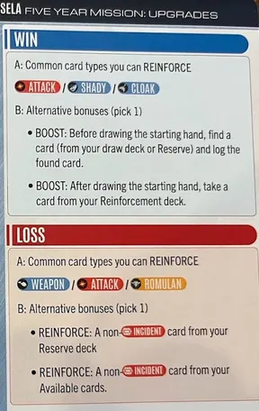
Sela's Reinforce traits are a tiny bit more specific than most Captains. On a win you can reinforce an Attack, Shady, or Cloak card. At first blush this seems limited, as no one Suit is included, but there's a lot of Attack (17) and Shady (9) cards, and even two common cloaks (Cloaking device and Bird-Of-Prey). The real question will be whether your captain can benefit from those Attack cards. On a loss, you can reinforce Weapon (5), Attack (17), or Romulan (7) cards. There's lots of options there, but you'll need to be looking for a good one to reinforce, most likely an Attack. Her alternative boosts for a loss are identical to Koloth, reinforcing a non-incident card from your Reserve deck or Available cards. Her alternative win boosts allow you to either (1) log a card from your draw deck or Reserve and log it, or (2) take a card from your Reinforcement pile after you draw your starting hand (increasing starting hand by one). There's a lot of options here, and frankly most of them are more interesting than reinforcing cards. I kind of like the boost that lets you log a card (I'd probably choose a Reserve card) to speed you towards developments.
↑ back to topBurnham
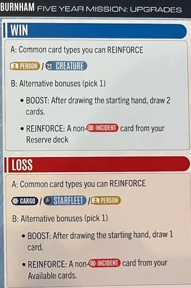
Burnham always has the choice of Reinforcing a Person card, which is nice for flexibility. On a win, she could also choose a Creature card, which is somewhat limiting in the core set but you can add Sehlat from the Promo pack in addition to Horta and Tribbles. On a loss you can also Reinforce Cargo or Starfleet trait cards, which feels very broad. For alternate loss boosts, she has the option of starting with additional hand size of one (Draw an additional card after drawing the starting hand) or reinforcing a non-Incident card from your available cards. On a win, it's the same, only you get to draw two cards and reinforce a Reserve. I think the problem I have with Burnham is those alternate boosts are way too good to want to choose between. A seven card starting hand can really change the game, as you can do a lot more work with beaming cards and thinning your deck. But taking a card out of the Reserves will always reduce that amount of deck cycling before Developments by one. It's quite impressive.
↑ back to topStrategy for Picking Boosts/Reinforcements
I would like to suggest that the alternate boosts in the 5-Year-Missions are usually a better choice than the Reinforcements, in my opinion. Now, you may know the perfect card to Reinforce at any given time, and I'll give that to you, it may happen. But overall, the gameplay value of some of the alternate boosts is incredible. Searching for cards? Drawing extra cards? Extra specialty track movement? These are all great, and don't cost an action token. Usually, I pick the captain I most want to face based on which boosts or cards I want. I've had several games where I've chosen Burnham to get permanent extra card draw, or to reinforce cards from my deck. I like Sela for similar reasons. But I think that if you're playing to win, the alternative boosts are far more beneficial than reinforcing cards, most of the time.
So, why ever Reinforce? Why not just always do the alternative bonus? In addition to a solo challenge that prevents this (see Rules of Acquisition below) I would suggest that players who don't see the necessity in Reinforcing, perhaps try a "flexible" version of that challenge, and only use the alternative bonus if they do not have a card matching the Captain's matching traits for Reinforcing. Obviously, play how you'd like, but if you're doing really well by ignoring the Reinforce mechanism altogether, that may just mean you need a little bit of a restriction. And for the record, there are times where I REALLY like a card and want to make sure it's mine going forward. That of course depends on your captain.
↑ back to topChallenges
Page 18 of the solo rulebook adds a variety of solo challenges to change up your campaigns. I think I've tried most if not all of these at this point and here are my thoughts:
Live Long and Prosper
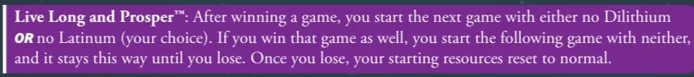
A reference to the Vulcan salute (first uttered during TOS 2x5: Amok Time), this challenge takes away one of your starting resources (Dilithium or Latinum) if you win, and both if you win again. Once you lose, you get both again as normal, through the campaign. I like this because it's a seemingly small effect that can make it really difficult to get some deck's engines off the ground. It certainly makes you change your pre-planned strategies.
↑ back to topThat Is Not a Weakness; That is Life
When Data keeps losing to famed strategist Sirna Kolrami at the Strategema E-Sport, Picard has to give Data a good kick in the pants by reminding him that it's possible to commit no mistakes, and still lose (TNG 2x21 Peak Performance). I remember somewhere Dávid Turczi said that it was suggested that quote be on the front of the rulebook, and Dávid replied, "No, if they make no mistakes I want them to win." For this one, once you've won your first game, you have to shuffle your Available and Reserve together, and randomly put the correct number of cards in your Reserve. This might actually help some captains, and it certainly mixes things up. I find it makes the games weird, but not necessarily harder.
↑ back to topTwo Weeks to the Closest Outpost
While I can't find a specific episode that references this specific line, it invokes the Original Series, where deep space exploration required ships to operate on their own without backup. This one can be devastating, because after every game you win, Reinforce goes into your Reserve deck instead of your starting deck. No idea how this would work with That Is Not Weakness, That is Life, other than to make sure that after you mix up everything you make sure that Reinforce isn't in your starting deck. I like the concept though, and it restricts your access to those cards until you actually can fish out Reinforce. You've also got another cycle through your deck before getting to your Developments, so plan accordingly.
↑ back to topRunning Like a Baby Gazelle
I just watched the episode of Enterprise (Season 2x1: Shockwave Part II) where Archer explains that humans need a little more time to start running, as opposed to the Gazelle that are born, walking in minutes, then start running. And since it takes some time to get things right, we're going to have a few more… Incidents. This one only kicks in when you have two wins in a row, but you'll shuffle an Incident from the Incident pile into your draw deck at the start of the game, and you'll do that for every game until you lose. This one won't actually affect most players unless they're on a hot streak, and since you win the five year mission upon your fifth win, it can only affect you after the first two wins, and then if you lose one more time. But still, quite annoying, and well conceived as a challenge.
↑ back to topRules of Acquisition
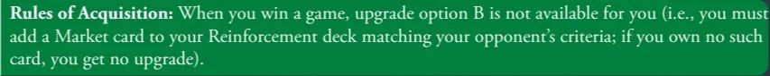
The Ferengi moral and economic codebook is full of ethically questionable proverbs. For you, it only means you must add a Market card to your reinforcement deck as opposed to taking the alternative boosts. I really, really like this one. In fact, I like to think of this as the way that Campaigns should really be, as my critique of the alternative boosts is highlighted above. If you've found these too easy, try following the Rules of Acquisition.
↑ back to topOnly Ship in the Quadrant
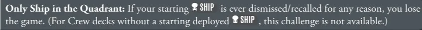
A clear reference to Voyager stuck alone in the Delta Quadrant, this challenge is devious. If your starting ship is ever dismissed or recalled FOR ANY REASON, you lose the game (if you have no starting deployed ship, you can't do this challenge). I can't think of a single game I kept my starting ship out the whole game. Some decks even reward you for logging your ship (Koloth with Good Day to Die, or the upcoming Kirk deck, for example). And certain bots or cards can take this completely out of your hands (force Sela to log a Cloak?). This is by far my least favorite challenge… which probably means it's pretty well designed.
↑ back to topThey Will Arrive on Tuesday
Along with the Enterprise-B, this is a reference to Captain John Harriman and his maiden voyage where the medical staff, tractor beam, and photon torpedoes won't be installed until Tuesday. For this challenge, you set one of your away teams aside when setting up a game, and you get it back when your Reserve is empty. After you win a game, it becomes two away teams, presumably resetting to one when you lose. This one is really hard for some captains, and a nothing burger for others. Sisko for instance couldn't care less. Archer on the other hand is going to have a miserable time with this one, especially once he finally wins a game.
↑ back to topFinal Scoring
At the end of the campaign, you'll either play ten games or have five wins. Depending on your final rank, you'll get an "Evaluation Result." This is just for fun but I've included it below.
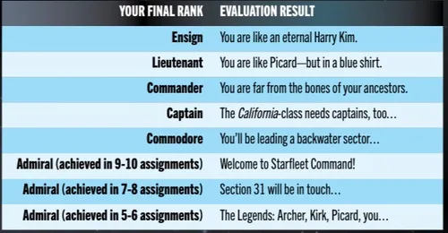
Of particular note:
There's a great Lower Decks episode referencing Harry Kim's inability to rise in the ranks (LD 4x9: Fissure Quest). I'd highly recommend watching it, and not just because it's a funny episode. Now that I'm deep into ST Enterprise, I might change this to an eternal Travis Mayweather as well. Pretty sure he didn't get a promotion either.
Picard appears in a blue shirt (sciences division) in the alternate timeline where he didn't start a bar fight with a Nausicaan right before leaving the academy (TNG 6x15: Tapestry). You're like Picard, if he didn't do so great.
Like Chakotay, we are far from the bones of our ancestors. They were apparently better at board and card games than you are if you achieve the Commander rank.
The California Class is the bottom level of the fleet, as depicted in Star Trek Lower Decks. And you're good enough to lead one of those pieces of junk.
If you ended at Commodore, you're good, just not good enough to watch over anybody but some dumb birds on a backwater planet (LD 3x7: A Mathematically Perfect Redemption).
The last three are pretty self explanatory. Nice job!
↑ back to topVideo Playthroughs
Playthrough by Tom Heath (slickerdrips), a Five Year Mission featuring Picard vs Koloth: